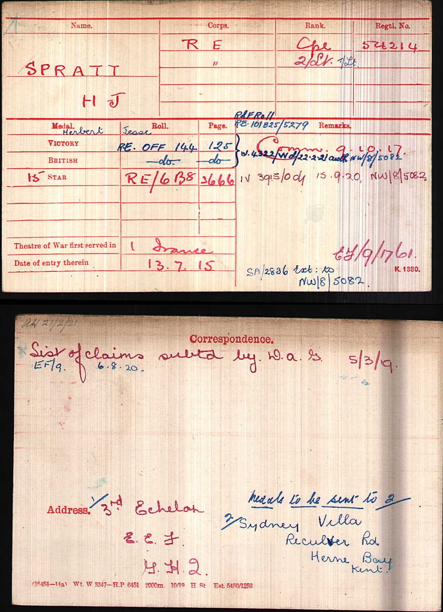
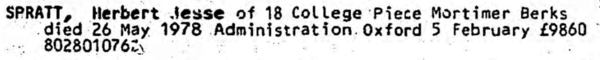
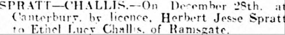
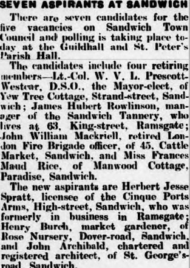
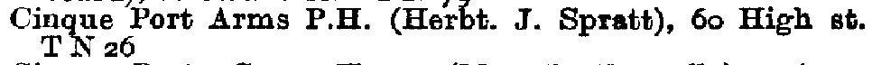
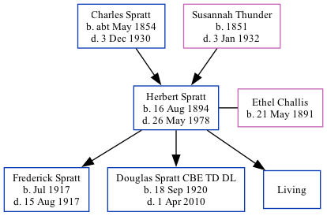

Herbert Jesse Spratt 1894 - 1978
[ Home ] | [ Calendar ] | [ Surnames Index ] | [ Family History ]A hotel manager and licensee and the son of Charles Spratt (a smack owner and fish salesman) and Susannah Thunder, Herbert Spratt, the first cousin twice-removed on the father's side of <a href="I1.html">Nigel Horne</a>, was born in Ramsgate, Kent, England on Aug 16, 1894<span class="citation">1,2</span>, was baptized there at Christ Church, Vale Square on Oct 7, 1894 and married Ethel Challis (a hotel manageress with whom he had 3 children: <a href="I1654.html">Frederick Charles</a>, <a href="I1656.html">Douglas Norman</a> and <a href="I1655.html">Laurence Herbert</a>, along with 1 surviving child) at Registry Office, Blean, Kent, England on Dec 28, 1914<span class="citation">5</span>.</p><p>Throughout his life, Herbert lived in several places: at 44 Addington Street in Ramsgate on Mar 31, 1901<span class="citation">7</span> and on Apr 2, 1911<span class="citation">8</span>; at Cinque Ports Arms, 60 High Street, Sandwich, Kent in 1935 and in 1938<span class="citation">6</span>; on 2 Sutherland Road, Deal, Kent on Sep 29, 1939<span class="citation">1</span>; on St Mary's Road, Mortimer Common, Berkshire, England in 1965; and at 18 College Piece, Mortimer, Berkshire in 1978. On Jul 13, 1915 he was serving in the military in France (<em>royal Engineers 54214; 2nd Lt</em>).<p>He died on May 26, 1978 in Wokingham, Berkshire<span class="citation">3,4</span>.
Parents
- Charles was born c. May 1854
- Susannah was born in 1851
Children
- Frederick Charles was born in Jul 1917
- Douglas Norman was born on Sep 18, 1920
Citations
- 1939 Register - Findmypast (was the head of the household)
- England & Wales births 1837-2006 - Findmypast
- England & Wales Government Probate Death Index 1858-2019 - Findmypast
- England & Wales deaths 1837-2007 - Findmypast
- England & Wales Marriages 1837-2005 - Findmypast
- 1938 Kelly's Kent Directory
- 1901 England, Wales & Scotland Census - Findmypast (was age 6 and the son of the head of the household)
- 1911 Census for England & Wales - Findmypast (was age 16 and the son of the head of the household)
Media
Herbert Spratt - Ethel Challis - marriage

Herbert Spratt - WW1 military record

Herbert Spratt - probate

Whitstable Times and Herne Bay Herald

Local Elections - Thanet Advertiser - 1-11-1935

1938 Kelly's Kent Directory

England & Wales births 1837-2006 - BMD/B/1894/3/AZ/000519/267
1901 England, Wales & Scotland Census - GBC/1901/0007443350
1911 Census for England & Wales - GBC/1911/RG14/04516/0043/4
England & Wales marriages 1837-2008 - BMD/M/1914/4/AZ/001125/013
England & Wales deaths 1837-2007 - BMD/D/1978/2/AZ/001042/003
1939 Register Transcription - TNA-R39-1703-1703C-031-11
Canterbury Baptisms Transcription - GBPRS-CANT-B-96523533
Medal Index Cards Transcription - GBM-MCI-4217080
England Births & Baptisms 1538-1975 - R_884613014
England & Wales Government Probate Death Index 1858-2019 - GBOR/GOVPROBATE/C/1980-1980/00215173
Family Tree
Generated by Ged2Site. Last updated on Jul 20, 2025